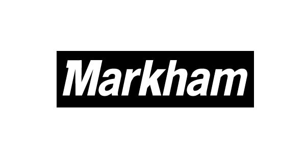
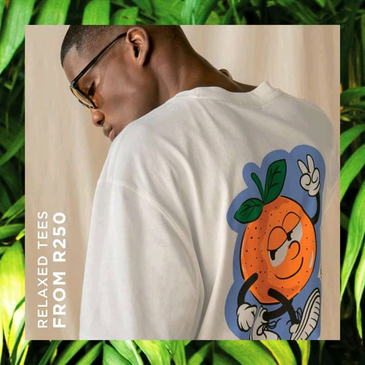
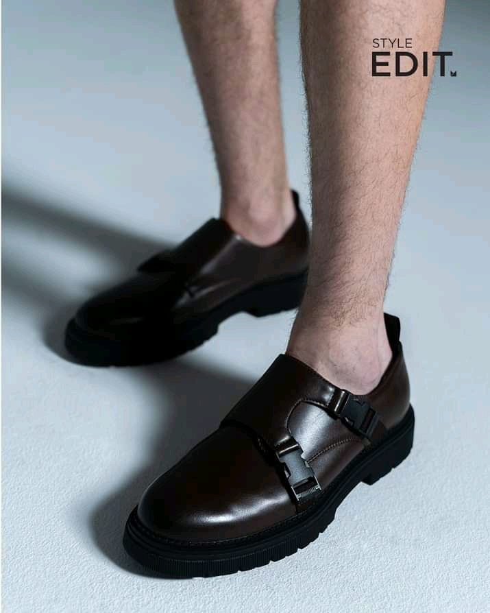
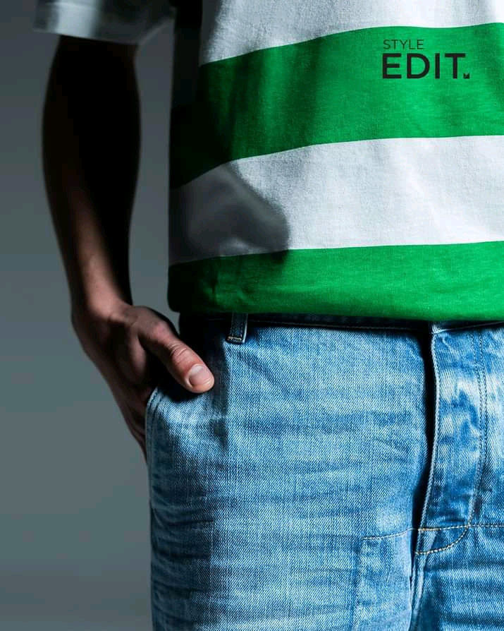

MARKHAM
WHO ARE WE ?
Markham is also owned bt TFG(Foschini Group) is the it is a South African JSE listed retail under retail clothing group, which trades more than 3,000 stores within its portfolio. It is headquarterd in Parow East near Cape Town.
In 2015, the company acquired in th British apparel chain Phase Eight fro Towerbrook Capital Partners, then valued at $300 million.
In March 2016, TFG acquired the Brirish chain Whistles with its 46 retail shops. In 2017, the company acquired Australian retail company Reatail aparel Group from Navis Capital Partners.
Through the series of investments, TFG has increased its manufacturing capacity in South Africa. By November 2021, it was producing almost three quarters.
SEE MORE OF WHAT WE OFFER:
  